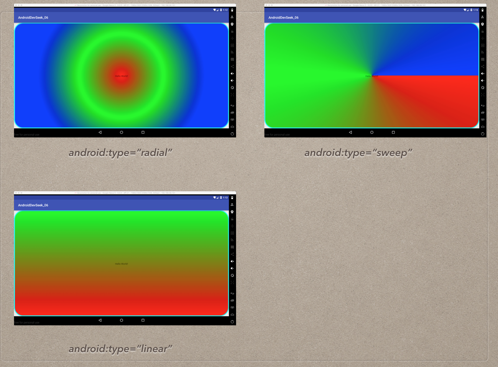
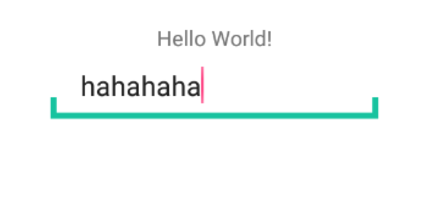
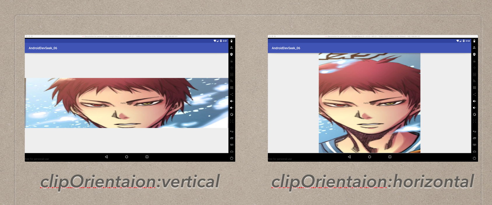

第六章: 梳理种类繁多的Drawable. 并了解相应的自定义Drawable
Drawable简介
Drawable表示一种图像的概念. **优点:**使用比自定义View的成本低, 非图片类型的Drawable占用空间较小. Drawable本身是一个抽象类. 是所有Drawable对象的基类, 每个具体的Drawable都是其子类.
Drawable内部宽高通过getIntrinsicWidth和getIntrinsicHeight这两个方法获得. 需要注意这个内部宽高的概念针对不同的类型的Drawable, 对于图片形成的Drawable内部宽高就是图片的宽高. 而颜色所形成的Drawable没有内部宽高的概念. Drawable的内部宽高不等于它的大小. 当作为View的背景的视图, Drawable会被拉伸至View的同等大小.
Drawable的分类
BitmapDrawable
表示一张图片, 在开发中直接引用原始图片也可, 下面给出在XML中描述稍微完整的声明
|
- src: 图片的资源文件id(AS下可能不会自动提示
mipmap,直接写入即可) - antialias: 图片抗锯齿.属性值boolean 开启可以让图片变得平滑.
- dither: 抖动效果. 属性值Boolean. 当图片的像素配置和手机屏幕的像素配置不一致时,开启此选项可以让高质量的图片在低质量的屏幕上继续保持较好效果. 例如图片模式为
ARGB8888,而设备屏幕所支持为RGB555. 开启可以让图片不会过于失真. - filter: 过滤效果. 当图片尺寸被拉伸或者压缩,可以保持较好的效果.
- gravity: 可以对图片进行定位. 可以使用
|组合属性使用. 可供使用的属性
| 可选项 | 含义 |
|---|---|
| top | 放在顶部, 不改变图片大小 |
| bottom | 放在底部, 不改变图片大小 |
| left | 放在左端, 不改变图片大小 |
| right | 放在右端, 不改变图片大小 |
| center_vertical | 使图片竖直居中, 不改变图片大小 |
| fill_vertical | 图片竖直方向填充容器 |
| center_horizontal | 使图片水平居中, 不改变图片大小 |
| fill_horizontal | 图片水平方向填充容器 |
| center | 图片同时水平和垂直居中, 不改变图片大小 |
| fill | 图片水平和竖直方向均填充容器, 这是默认值 |
| clip_vertical | 表示竖直方向的裁剪, 较少使用 |
| clip_horizontal | 表示水平方向的裁剪, 较少使用 |
- mipmap: 纹理映射 默认为false
- tileMode: 平铺模式. 有四种值:
disable关闭平铺模式(默认值),repeat普通平铺开启,mirror平铺的同时,平铺图片做镜面效果.clamp在原始图片最右边像素向右延伸, 最下边像素向下延伸.如图:

NinePatchDrawable
表示一张.9格式的图片, .9图片可以自动的根据所需要的宽高进行相应的缩放并保证不失真. 和BitmapDrawable使用一样直接引入图片即可. xml方式如下:
|
ShapeDrawable
这是一种通过颜色来构成的图片, 它可以为纯色的图形, 也可以具有渐变的图形. 以下是一个简单使用方法
|
来说说具体的属性都有什么
shape:
表示图片的形状, 有四个选项: rectangle()矩形, oval(椭圆), line(横线), ring(圆环). 默认值为矩形. 另外line和ring这两个选项必须要通过<stroke>标签来指定线的宽度和颜色等信息, 否则无法达到预期效果.当ring这个形状还需要添加几个属性innerRadius圆环内半径, thickness圆环的厚度,外半径减去内半径的距离. 还有两个半分比的属性.效果一样. useLevel:基本都是用false, 否则可能无法到达预期的显示效果,除非被当做LevelListDrawable.如下图可以看看几个方式的样子

<corner>
表示shape的四个角度. 它只适用于矩形shape. 支持属性总共有五个,一个Radius和四个顶角如topLeftRadius等等. Radius的优先级最低, 会被其他属性覆盖.
<gradient>
它与<solid>标签是互相互斥的. 其中solid表示纯色填充, 而gradient则表示渐变效果.
有如下属性:
android:angle–渐变的角度, 默认为0, 其值必须为45的倍数. 0表示从左到右, 90表示从下到上.android:centerX–渐变的中心点横坐标(范围0~1)android:centerY–渐变的中心点纵坐标(范围0~1)android:startColor–渐变的起始色android:centerColor–渐变的中间色android:endColor–渐变的结束色android:gradientRadius–渐变半径, 仅当android:type=”radial”时有效,**并且当type=”radial”**的时候必须声明此属性,否则崩溃android:useLevel–一般为false.当Drawable作为StateListDrawable使用时为trueandroid:type–渐变的类型, 有linear(线性渐变), radial(径向渐变), sweep(扫描线渐变)三种, 默认为线性渐变
看看type不同的格式什么样子

<solid>
表示纯色填充, 通过android:color来指定颜色
<stroke>
shape的描边,有四个属性. width描边的宽度, color描边的颜色, dashWidth组成虚线的线段的宽度, dashGap组成虚线的线段之间的间隔.
<padding>
这个表示空白, 但是他表示的不是shape的空白, 而是包含它的View的空白, 有上下左右四个属性
<size>
Drawable有两个方法获得固有高度. getIntrinsicWidth(), getIntrinsicHeight(). 就是如果是图片Drawable那就是图片的属性大小. 如果不是那就是返回-1. 如果size标签设置了大小. 在方法返回的时候就不再是-1. 但是作为View的背景, shape还会被拉伸或者缩为View的大小.
LayerDrawable
对应的标签是<layer-list>, 他表示一个层次化得Drawable集合.通过将不同的Drawable放置在不同的层面上从而达到一种叠加的效果.
一个这种标签可以包含多个item, 每个item表示一个Drawable. item的结构很简单上下左右四个属性加上id属性和drawable属性. 可以直接通过drawable属性引用一个Drawable也可以在标签写个子标签生成一个.

StateListDrawable
StateList对应<selector>标签, 也是Drawable集合. 这个我们经常使用在开发中的按钮状态选择器.
|
select标签对应有三个属性
- constantSize: 用于
StateListDrawable的固有大小是否不随着其状态改变而改变的, 因为状态的改变会切换不同的item的drawable, 而不同的drawable具有不同的固有大小. 如果为true那就是整个StateListDrawable固有大小是内部所有Drawable的最大固有大小的值. false会随之变化, 默认为false - dither: 是否开启抖动效果, 默认为true
- variablePadding: 表示padding是否随着状态的改变而改变, padding取得值是所有Drawable的最大值. 默认为false. 不会随之改变.
<item>标签也比较简单, 指定一个drawable,并加一个状态判断值.
下面给出常见的状态判断
| 状态 | 含义 |
|---|---|
| android:state_pressed | 表示按下状态, 比如Button被按下后没有松开时的状态 |
| android:state_focused | 表示View已经获取了焦点 |
| android:state_selected | 表示用户选择了View |
| android:state_checked | 表示用户选中了View, 一般适用于CheckBox这类在选中和非选中之间切换的 |
| android:state_enabled | 表示View当前是否可用 |
默认状态的一定要放在最后一条, 因为系统是按照从上到下的顺序查找. 只要找到任何一个匹配状态的那么久结束了.
LevelListDrawable
LevelListDrawable对应于<level-list>标签, 也表示一个Drawable集合, 集合中每一个Drawable都有一个等级的概念, 根据不同的等级LevelListDrawable会切换不同的对应的Drawable.
|
这里就相当于给每一个Drawable设定一个标识. level-list会根据这个标识去自己的item中查找. 默认等级为0, Level的取值在0~10000. 在给每个Item声明等级的时候尽量最大和最小等级保持一致. 让每个item都可以有一个唯一标识等级, 而避免有一些公共拥有等级的Item导致出现和我们预期的不符.
如果作为了背景, 那么获得Drawable对象通过getLevel(), setLevel()来得到和设置不同的等级做到切换图片的效果. 如果是ImageView那么通过前景设置其等级就可以,一定别忘了把Drawable设置前景再通过这种方式实现.
TransitionDrawable
对应着<transition>标签, 它用于实现两个Drawable之间的淡入淡出效果.
<transition xmlns:android="http://schemas.android.com/apk/res/android"> |
TransitionDrawable drawable = (TransitionDrawable) iv_main.getBackground(); |
这个没什么好说的了, 很简单. 注意一下如果是给ImageView设置前景的话那么不要用getBackground()来获取了,通过getDrawable()来获取.
InsetDrawable
InsetDrawable对应<inset>标签, 它可以将其他Drawable内嵌到自己当中, 并可以在四周留出一定的距离. 当一个View希望自己的背景比自己的实际区域小的时候, 可以使用这个来实现.(相当于给使用的View增加了margin效果) LayerDrawable也可以实现此效果
|
ScaleDrawable
ScaleDrawable对应<scale>标签, 他可以根据自己的等级level将制定的Drawable缩放到一定比例.
|
并在代码中设置等级, 默认为0是不显示ScaleDrawable
ScaleDrawable drawable = (ScaleDrawable) findViewById(R.id.activity_main).getBackground(); |
其中scaleHeight和scaleWidth需要的是百分比值. 有点别扭, 如果你设置了10%, 那么实际的意义就是缩放了原大小的10%, 相当于去掉了设置的值. 最终呈现出来的是1-设定的百分比. 就是展现了90%.
而设置的等级会影响最终的图片大小, 等级越大图片越大. 最好等级控制到0~10000 最后.
ClipDrawable
ClipDrawable对应于<clip>标签, 他可以根据自己当前的等级来裁剪Drawable, 裁剪的方向通过android:clipOrientation和android:gravity这两个属性来共同控制.
|
首先android:clipOrientation 如果参数添加水平 horizontal. 实际上是竖直切割, 保留垂直方向的完整. 如果是Vertical反之. 看图吧.

而gravity有的属性和BitmapDrawable中的gravity一样. 这里现在是android:clipOrientation="horizontal"它是以水平方向做的垂直切割. 那么通过给gravity设置左 中 右就是left, center, right可以达到不同的效果. 如图

重要的一点还有动态代码设置等级, 要是不设置等级就是默认的0, 0就是切割掉100%的部分,所以剩下的部位为0也就是空的
ClipDrawable drawable = (ClipDrawable) findViewById(R.id.activity_main).getBackground();
drawable.setLevel(5000);
这个等级的数还是1~10000.
- 等级为0那么意味着裁剪Drawable的**100%**部分. 什么东西没有.空的
- 等级为5000那么意味着裁剪Drawable的**50%**部分, 我上面的演示的图片都是以等级为5000为标准测试的
- 等级为10000那么就意味的裁剪部分为Drawable的**100%**部分, 也就是完全显示了.
可以看出来了, 综合上面的看出, 上面的gravity的方向可以认为是从那边开始进行裁剪保留.
自定义Drawable
一般Drawable都是作为View的背景图, 或者ImageView的显示图片. 其工作原理核心就是draw()方法. 而系统会调用Drawable的draw()来绘制View的背景, 所以我们通过重写draw()来实现自定义Drawable.
一般draw(), setAlpha(), setColorFilter(), 和getOpacity()都是要实现的 , draw()里面的具体实现和我们View的onDraw()很相似. 可以参考ShapeDrawable和BitmapDrawable的源码去仿造实现.
在自定义的时候注意: 如果要定义的Drawable有固有的大小值, 那么最好重写getIntrinsicWidth()和getIntrinsicHeight()这两个方法. 因为它会影响到View的wrap_content布局. 最后内部大小不一定等于Drawable的实际大小, Drawable实际大小可以通过getBound()来获取.
下一章: Andriod动画深入分析